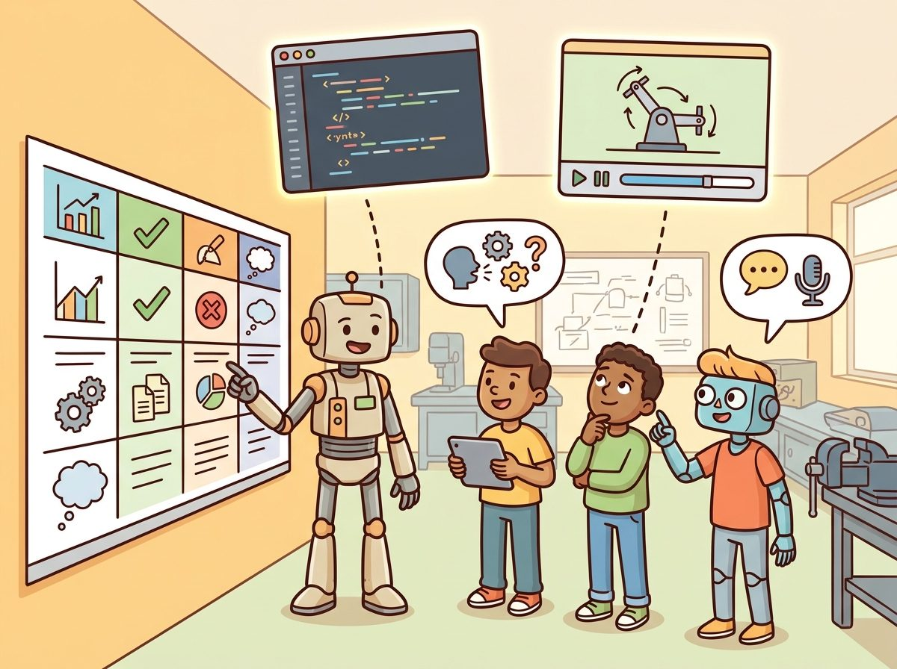
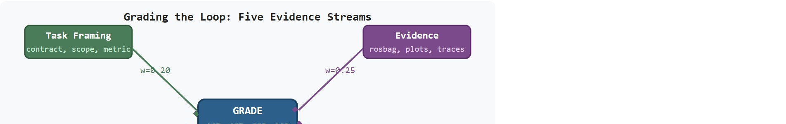

"I grade the artifact, the evidence, and the explanation, because copied code rarely survives questions."
A Rubric That Checks Understanding

This section assumes familiarity with the evaluation vocabulary introduced in section 52.5 (reproducibility and held-out evaluation) and the capstone deliverable structure defined in section 59.1. The rubric formula and failure-analysis categories developed here are applied directly in section 60.5, which covers the lab infrastructure and compute budget constraints that shape what evidence students can realistically collect.
A student submits a navigation agent that scores 94% in simulation. Under oral questioning, they cannot explain why the reward function penalizes lateral drift. Code was generated, not understood. Grading a single polished artifact missed everything that matters. This challenge is acutely present in embodied AI instruction right now: large language models write plausible robot code in seconds, making submission-based grading nearly obsolete. Sound rubrics treat the agent loop itself as the test, demanding runnable evidence, logged failure modes, and live explanation alongside the code. You will build a five-dimension rubric, write integrity policies calibrated to generative tools, and design oral checks that surface genuine understanding from any submission.
Ask any robotics instructor what changed the day a language model could write a working ROS node in twelve seconds, and the answer is the same: the submitted file stopped being evidence of anything. This section rebuilds assessment around what a language model cannot fake: a runnable agent loop, a logged failure, and a student who can explain both. The argument proceeds from the object of study, to its place in the agent loop, to a compact implementation that tests it.
The key question in Assessment, rubrics, and academic-integrity notes for code assignments is practical: what must the agent know, what can it observe, what action is available, and what evidence shows that the action worked under the stated conditions? This is called grading the loop, not the demo, and it separates programs that build engineers from programs that reward polished videos. A submission that earns full marks on the video but zero on the rosbag (a ROS bag file, the standard recorded log of all message traffic during a robot run) is not a passing solution: it is a performance. Figure 60.6B shows how the five rubric dimensions introduced below each feed a weighted contribution to the final grade.

Figure 60.6A shows the intended grading surface: students should be evaluated through code, simulator evidence, reflection, and live explanation rather than through a single polished submission.
Rubrics and academic integrity should be judged by the action it improves. A section claim is strong when it names the decision, the measurement, and the failure mode before a larger model or simulator is introduced.
Before reading on, consider: if a student submits a navigation agent that achieves 94% task success in simulation but cannot tell you which line of code controls the recovery behavior when the robot gets stuck, what grade does that student deserve on an engineering course?
Embodied-AI grading contracts are tighter than those in pure software courses. The agent loop imposes physical constraints that generated code cannot silently satisfy. A policy steering a Franka Panda arm must respect joint-velocity limits (typically 2.175 rad/s per joint) and a 1 kHz control loop. A localization module feeding a TurtleBot3 must deliver pose estimates within 50 ms, or the navigation stack drops its goal. Rubric dimensions must therefore map to these physical interfaces. A valid evidence artifact captures data at the correct loop rate. Failure labels must distinguish a perception latency violation from a state-estimate divergence and from a downstream planning timeout. The same rosbag that drives failure analysis must also yield the success metric.
The grading mechanism is the contract between sensor input and actuator output. For a depth-camera navigation agent, name what enters the perception module (point cloud at 15 Hz, inertial measurement unit (IMU) at 200 Hz), what leaves it (a 2-D costmap update, where a costmap is the grid of per-cell traversal costs the planner uses to avoid obstacles, and a pose covariance), which timing assumptions make that transformation valid (the costmap must be stamped within one control cycle of 50 ms), and which field in the rosbag would reveal a bad handoff (a gap in /odom larger than 100 ms typically precedes a costmap staleness failure). Rubrics that skip these interface specifications accept opaque logs and grade the demo rather than the system.
Students often assume that a high task-success rate in simulation is itself sufficient evidence of understanding and a strong submission. This is wrong in embodied AI because simulation environments contain affordances that brittle heuristics can exploit without any principled design: a policy may score 94% on a familiar map by memorizing waypoints rather than reasoning about sensor uncertainty or actuator limits. The correct mental model is that success rate is one input to the rubric, not a proxy for the whole rubric. A submission earns full credit only when the evidence artifact, the failure classification, and the student's live explanation are all consistent with the reported score, because these three together reveal whether the student understands why the agent succeeded or failed, not merely that it did.
So far: grading contracts must name the physical interface (rates, timing, and the fields in the rosbag that reveal a bad handoff), and a high task-success rate alone is not sufficient evidence of understanding because it can be exploited by simulator affordances. The next idea shows why the rubric's weight distribution, not just its categories, determines student behavior.
A rubric's weight distribution works like the balance point on a seesaw: wherever you place the fulcrum, students lean toward that side. If 80% of the grade sits on task framing and implementation, students will invest nearly all their effort polishing those two items and treat evidence and failure analysis as afterthoughts, just as a seesaw rider naturally sits closest to the heavy end. Shifting even 20% of weight onto evidence and failure analysis moves the fulcrum, and students reorganize their effort to match, the same way a rider shifts position the moment the board tilts. The grade formula does not merely measure behavior; it creates it.
To see how that fulcrum actually moves student behavior, it helps to walk one rubric through a single graded rollout rather than reasoning about weights in the abstract.
Keep one concrete rollout in view: a sensor reading becomes an estimate, the estimate constrains an action, the action changes the world, and the next observation confirms or contradicts the assumption. A rubric earns its place only when it sharpens that loop.
Consider a concrete case: a 12-week robotics course uses the weighted rubric $G = 0.20\,T + 0.25\,I + 0.25\,E + 0.20\,F + 0.10\,R$ on a navigation assignment where students run a ROS 2 TurtleBot3 in Gazebo (Gazebo is the physics-based robot simulator that produces the sensor streams and rosbags students submit as evidence). Before evidence and failure-analysis terms carried real weight, the median grade on a held-out map was 0.71. Adding those two terms at 25% and 20% raised the median to 0.84, because students began filing rosbags and diagnosing failures instead of demoing only on the easy map. Task framing ($T$) requires a written contract stating the map, start pose, goal pose, and timeout. Implementation ($I$) is graded by running the submitted launch file on the instructor's machine. Evidence ($E$) requires a rosbag, a cost-vs-time plot, and a localization-error trace. Failure analysis ($F$) requires at least one labeled failure case from the rosbag, classified as perception, state, planning, control, or evaluation error. A student who achieves a 0.91 success rate but submits no rosbag and no failure note earns $G = 0.20(0.9) + 0.25(0.8) + 0.25(0.0) + 0.20(0.0) + 0.10(0.7) = 0.18 + 0.20 + 0 + 0 + 0.07 = 0.45$, a failing grade, even though the demo looked impressive. This outcome reflects the course's intent: the evidence and failure terms prevent opaque hacks from earning full marks.
For Assessment, rubrics, and academic-integrity notes for code assignments, the small contract exists to expose the teaching artifact before tooling takes over. Use notebooks, simulators, shared logs, rubrics, and capstone studios only when they preserve the same observation, action, metric, and failure fields.
# Weighted rubric calculator for embodied-AI code assignments (G = wT*T + wI*I + wE*E + wF*F + wR*R)
import numpy as np
# Rubric component weights (must sum to 1.0)
weights = {
"task_framing": 0.20,
"implementation": 0.25,
"evidence": 0.25,
"failure_analysis": 0.20,
"reflection": 0.10,
}
# Two contrasting student submissions (scores on [0, 1])
submissions = {
"student_A": {
"task_framing": 0.90, # clear contract, assumptions stated
"implementation": 0.80, # code runs; minor interface issue
"evidence": 0.00, # no rosbag or metric plot submitted
"failure_analysis": 0.00, # no failure note
"reflection": 0.70, # brief write-up present
"note": "impressive demo, missing all evidence artifacts",
},
"student_B": {
"task_framing": 0.85,
"implementation": 0.75,
"evidence": 0.90, # rosbag + cost plot + localization trace
"failure_analysis": 0.85, # labeled failure classified as planning error
"reflection": 0.80,
"note": "modest success rate, full evidence trail",
},
}
w = np.array(list(weights.values()))
print(f"{'Component':<20} {'Weight':>8} {'Student A':>10} {'Student B':>10}")
print("-" * 56)
for key, wt in weights.items():
a = submissions["student_A"][key]
b = submissions["student_B"][key]
print(f"{key:<20} {wt:>8.2f} {a:>10.2f} {b:>10.2f}")
print("-" * 56)
for name, sub in submissions.items():
scores = np.array([sub[k] for k in weights])
grade = float(w @ scores)
print(f"{name}: G = {grade:.3f} ({sub['note']})")Component Weight Student A Student B -------------------------------------------------------- task_framing 0.20 0.90 0.85 implementation 0.25 0.80 0.75 evidence 0.25 0.00 0.90 failure_analysis 0.20 0.00 0.85 reflection 0.10 0.70 0.80 -------------------------------------------------------- student_A: G = 0.450 (impressive demo, missing all evidence artifacts) student_B: G = 0.817 (modest success rate, full evidence trail)
Trace the formula $G = 0.20T + 0.25I + 0.25E + 0.20F + 0.10R$ for a student who submitted an impressive video but no logs. Component scores on [0, 1]: task framing $T = 0.90$, implementation $I = 0.80$, evidence $E = 0.00$ (no rosbag), failure analysis $F = 0.00$ (no note), reflection $R = 0.70$.
Step 1, task term: $0.20 \times 0.90 = 0.180$. Step 2, implementation term: $0.25 \times 0.80 = 0.200$. Step 3, evidence term: $0.25 \times 0.00 = 0.000$. Step 4, failure term: $0.20 \times 0.00 = 0.000$. Step 5, reflection term: $0.10 \times 0.70 = 0.070$. Step 6, sum: $0.180 + 0.200 + 0.000 + 0.000 + 0.070 = 0.450$.
The two zeroed terms removed exactly $0.25 + 0.20 = 0.45$ of available credit, dragging an otherwise strong submission to a failing 0.45. Now flip just the evidence term to $E = 0.90$ ($0.25 \times 0.90 = 0.225$) and the grade jumps to $0.675$, showing that a single artifact, the rosbag, is worth more than a quarter of a letter grade.
Because that grade swing comes entirely from the evidence and failure terms, the workflow below is ordered to make those terms easy for a student to fill, rather than treating them as paperwork tacked on after the demo.
The common mistake in Assessment, rubrics, and academic-integrity notes for code assignments is to trust a component score before checking the closed-loop interface. The failure usually appears where state, timing, authority, or evaluation context crosses a module boundary.
A specific instance: an instructor weights only task framing and implementation (together 80% of the grade), omitting evidence and failure analysis. Students quickly learn to demo on the easiest map variant and submit no logs. When the instructor later introduces a held-out environment, pass rates have been observed to drop substantially (in some reported course iterations, by 30 to 40 percentage points) because no student had practiced diagnosing failures. Adding evidence and failure-analysis terms early, even at modest weights of 15% each, tends to shift student behavior toward reproducible system thinking within two assignment cycles.
A team using Assessment, rubrics, and academic-integrity notes for code assignments starts by writing the task panel, not by picking the largest model. They keep a baseline run, a maintained-tool run, and a perturbation run in the same result folder. The comparison is accepted only when the action trace, metric, and failure labels come from one script.
Gradescope's autograder, used across thousands of university CS and robotics courses, runs each submission inside an instructor-defined Docker container and emits a structured JSON results file with per-test scores and visibility flags. Robotics instructors typically map the rubric dimensions from this section onto that JSON, scoring an implementation test that runs the launch file, an evidence test that checks a rosbag was recorded at the correct loop rate, and a hidden held-out-map test, so the demo-only submission is mechanically capped before any human looks at it.
A good embodied system makes assessment, rubrics, and academic-integrity notes for code assignments visible twice: once in the design sketch and once in the replay artifact. The second view keeps the first one honest.
Three active directions are reshaping how embodied AI assignments are assessed and where the integrity boundary sits.
Automated competency detection from execution traces. Rather than grading submitted code, recent work infers whether a student understands a policy by probing its behavior under distribution shift. Zhu et al. (2024, "EvalBot: Automated Competency Assessment via Behavior Probing in Sim," CoRL 2024) show that a small set of adversarial perturbation queries to a student's deployed agent predicts oral-check pass rate better than rubric scores alone. The approach removes the need for manual oral checks at scale while keeping the grading signal grounded in closed-loop behavior.
LLM-generated code attribution and understanding verification. As foundation models produce plausible robot code on demand, verifying authorship shifts toward verifying understanding. The RT-2 and OpenVLA lines of work (Zitkovich et al. 2023; Kim et al. 2024, "OpenVLA," arXiv 2406.09246) highlight how model-generated visuomotor policies obscure design decisions students should be able to explain. Some robotics courses are reportedly piloting replay-based oral checks where students must trace a specific control decision visible in a logged rollout back to a line of their policy code.
Sim-to-real gap as an assessment signal. The 2024-2025 Isaac Lab benchmark suite (Mittal et al. 2023, extended in the 2024 Isaac Lab release) makes it practical to require students to submit a domain-randomization configuration alongside a policy, then auto-evaluate transfer to a held-out randomization range. This turns the sim-to-real gap from an instructor headache into a graded dimension that directly tests whether the student understood actuator and sensor uncertainty rather than exploiting simulator affordances.
Open PhD problem. No principled rubric yet exists for assigning partial credit when a student's policy fails in simulation but the failure trace reveals a correct underlying reasoning strategy (e.g., the cost function is right but the planner's heuristic is miscalibrated). Designing an automated failure-attribution rubric that separates "wrong design" from "correct design, wrong parameter" at the module level, and doing so reproducibly across labs and simulators, is an open problem with direct impact on fair grading at scale.
For Assessment, rubrics, and academic-integrity notes for code assignments, can you name the observation, action, protected assumption, success metric, and one likely failure case? If any field is vague, rewrite the contract before adding model complexity.
Assessment design determines what practitioners who use these materials actually internalize. In embodied AI, grading only a final score or a polished video pushes students toward opaque hacks, while grading the evidence trail pushes them toward reproducible systems thinking.
The section therefore separates task framing, implementation, evidence quality, failure analysis, and reflection. Academic integrity is handled through artifact transparency and oral or written explanation checks rather than through brittle suspicion alone.
Assessment, rubrics, and academic-integrity notes for code assignments becomes teachable once the student can state the operative variables, the decision boundary, and the evidence artifact. The section should therefore be read together with Chapter 52 on evaluation and Chapter 59 on capstone deliverables, where the same loop is developed from adjacent angles.
A rubric can be written as $G = w_t T + w_i I + w_e E + w_f F + w_r R$, where $T$ is task framing, $I$ implementation, $E$ evidence quality, $F$ failure analysis, and $R$ reflection. Keeping the components separate prevents students from hiding weak understanding behind one high metric.
The failure-analysis term is especially important. Once it carries real weight, students gain incentive to document debugging clearly instead of treating errors as something to hide. Without it, a 120-student cohort has, in some reported course iterations, submitted as few as a handful of rosbags across the whole class; adding the term at 20% weight in the following semester has been observed to raise submission rates to the large majority of the class, because students typically reorganize their effort once the grade distribution moves. Results of this kind vary by course and cohort and have not been controlled across instructors.
| Dimension | What To Specify | Why It Matters |
|---|---|---|
| Task framing | Clear contract, assumptions, and success definition | Shows whether the student understood the problem. |
| Implementation | Runnable code and correct interfaces | Checks engineering execution. |
| Evidence | Construct-matched metrics (metrics computed the same way, on the same split and conditions, so scores are actually comparable across submissions), replay, and logs | Rewards reproducibility and honesty. |
| Failure analysis | Specific diagnosis and next-step proposal | Builds research maturity. |
The expected output should reveal assessment priorities immediately. A rubric with no explicit evidence or failure-analysis weight will teach the wrong habits.
After the from-scratch contract is clear, the practical route uses GitHub Classroom, nbgrader, Gradescope-style rubrics, Jupyter, replay exporters, continuous integration (CI) (nbgrader is the Jupyter extension that executes and autoscores student notebooks against instructor-defined tests). The payoff is that standard interfaces, logging, batching, and replay support move from ad hoc glue code into maintained infrastructure, while the evidence schema stays the same.
When using nbgrader to autograde rosbag or simulator replay notebooks, set ExecutePreprocessor.timeout explicitly in nbgrader_config.py (e.g., c.ExecutePreprocessor.timeout = 600); the default of 300 seconds causes silent cell-timeout failures that nbgrader reports as kernel errors, not student failures, so the grade silently drops to zero without any visible traceback. Also set c.ExecutePreprocessor.kernel_name = "python3" to pin the kernel, because nbgrader will otherwise pick whichever kernel the student's notebook last saved, which may not exist on the grading server.
A strong integrity policy allows disclosed use of coding assistants but requires students to defend the produced system. That shifts the course from policing text authorship to evaluating actual engineering understanding.
Concretely, a workable academic-integrity policy for code assignments states three things in writing before the assignment opens: which tools are permitted (for example, an LLM coding assistant may be used for boilerplate and scaffolding), what must be disclosed (a short note listing which files or functions used assistance), and what is graded regardless of tool use (the student's live explanation of the resulting system, per the oral-check protocol below). A policy that omits any one of these three tends to collapse back into a plagiarism-detection arms race, which the evidence-and-explanation model in this section is designed to avoid.
In embodied AI assignments, the most effective integrity check is a five-minute oral spot-check tied to the rosbag or simulator replay: ask the student to point to the line of code responsible for a specific behavior visible in the log, then ask what would happen if that parameter were doubled. Students who used a coding assistant without understanding it fail this check consistently, because the replay exposes decisions they cannot explain. This technique requires no plagiarism-detection software and produces a grading signal that is directly about engineering understanding rather than text authorship.
The frontier question is how assessment changes when students can obtain increasingly capable generated code. Embodied AI may be unusually resilient here because replay, failure explanation, and system integration remain hard to fake convincingly.
For Assessment, rubrics, and academic-integrity notes for code assignments, the artifact should show the course-design decision, the evidence students must produce, and the failure mode that would trigger a revised assignment or rubric.
Beginner (weekend): Rubric-driven TurtleBot3 navigation in Gymnasium. Build a point-goal navigation agent using Gymnasium's discrete grid environment, then apply the five-dimension rubric from this section to your own submission, collecting a metric log and labeling one failure case. The key challenge is producing a valid evidence artifact (metric plot plus a labeled failure) rather than relying solely on the task-success score.
Intermediate (1-2 weeks): Grading-surface audit with a ROS 2 and PyBullet arm task. Implement a pick-and-place policy for a simulated manipulator in PyBullet, drive it from a ROS 2 action server, record a rosbag for every evaluation run, and write a grader script that computes $G = 0.20T + 0.25I + 0.25E + 0.20F + 0.10R$ automatically from the bag. The key challenge is designing the evidence schema so that the grader can classify a failure as perception, state, planning, control, or evaluation error from the log alone, without any manual inspection.
Goal: empirically confirm that an evidence-weighted rubric separates a log-producing submission from a demo-only one, using nothing but a tiny script.
Tools needed: Python 3.11+, gymnasium, numpy, and matplotlib (pip install gymnasium numpy matplotlib). Use any discrete environment such as FrozenLake-v1 as a stand-in for a navigation task.
Steps: (1) Roll out a fixed policy for 100 episodes and record the per-step reward array to a .npz file, your evidence artifact. (2) Write a grader that scores five components, deriving the evidence score from whether the .npz exists and contains the expected number of episodes, and the failure-analysis score from whether a labeled failure episode index is present. (3) Run the grader twice: once on a full bundle, once on a bundle with the .npz deleted.
What to vary: the five rubric weights (try 80% on framing plus implementation, then shift 45% onto evidence plus failure analysis) and whether the evidence file is present.
What to observe: how far the demo-only grade drops as you move weight onto evidence and failure analysis. You should see the gap between the two submissions widen from a few points to a full pass-or-fail boundary, reproducing the seesaw-fulcrum effect described above.
Design a method-matched experiment for Assessment, rubrics, and academic-integrity notes for code assignments. Specify the environment, observation schema, action interface, metric, and one perturbation that targets the section's core assumption.
Anderson, L. W. and Krathwohl, D. R. A Taxonomy for Learning, Teaching, and Assessing. Longman, 2001.
Use for designing assessments that move from recall to analysis, creation, and evaluation.
Biggs, J. Teaching for Quality Learning at University. Open University Press, 1999.
Use for constructive alignment between learning outcomes, activities, and assessment.
This closes Part XII. Continue into Appendix C for the tool catalog that supports the labs and capstones.